- Credits:
- May people have contributed with suggestions and bug reports. Although the following list is certainly incomplete, we would like to thank: Wei Dong, Loic, Giuseppe, Liu, Erwin, P. Ivanov, and Q. S. Luo.
sift.h implements a SIFT filter object, a reusable object to extract SIFT features [6] from one or multiple images.
Overview
A SIFT feature is a selected image region (also called keypoint) with an associated descriptor. Keypoints are extracted by the SIFT detector and their descriptors are computed by the SIFT descriptor. It is also common to use independently the SIFT detector (i.e. computing the keypoints without descriptors) or the SIFT descriptor (i.e. computing descriptors of custom keypoints).
SIFT detector
A SIFT keypoint is a circular image region with an orientation. It is described by a geometric frame of four parameters: the keypoint center coordinates x and y, its scale (the radius of the region), and its orientation (an angle expressed in radians). The SIFT detector uses as keypoints image structures which resemble “blobs”. By searching for blobs at multiple scales and positions, the SIFT detector is invariant (or, more accurately, covariant) to translation, rotations, and rescaling of the image.
The keypoint orientation is also determined from the local image appearance and is covariant to image rotations. Depending on the symmetry of the keypoint appearance, determining the orientation can be ambiguous. In this case, the SIFT detectors returns a list of up to four possible orientations, constructing up to four frames (differing only by their orientation) for each detected image blob.
There are several parameters that influence the detection of SIFT keypoints. First, searching keypoints at multiple scales is obtained by constructing a so-called “Gaussian scale space”. The scale space is just a collection of images obtained by progressively smoothing the input image, which is analogous to gradually reducing the image resolution. Conventionally, the smoothing level is called scale of the image. The construction of the scale space is influenced by the following parameters, set when creating the SIFT filter object by vl_sift_new():
- Number of octaves. Increasing the scale by an octave means doubling the size of the smoothing kernel, whose effect is roughly equivalent to halving the image resolution. By default, the scale space spans as many octaves as possible (i.e. roughly
log2(min(width,height)), which has the effect of searching keypoints of all possible sizes. - First octave index. By convention, the octave of index 0 starts with the image full resolution. Specifying an index greater than 0 starts the scale space at a lower resolution (e.g. 1 halves the resolution). Similarly, specifying a negative index starts the scale space at an higher resolution image, and can be useful to extract very small features (since this is obtained by interpolating the input image, it does not make much sense to go past -1).
- Number of levels per octave. Each octave is sampled at this given number of intermediate scales (by default 3). Increasing this number might in principle return more refined keypoints, but in practice can make their selection unstable due to noise (see [1]).
Keypoints are further refined by eliminating those that are likely to be unstable, either because they are selected nearby an image edge, rather than an image blob, or are found on image structures with low contrast. Filtering is controlled by the follow:
- Peak threshold. This is the minimum amount of contrast to accept a keypoint. It is set by configuring the SIFT filter object by vl_sift_set_peak_thresh().
- Edge threshold. This is the edge rejection threshold. It is set by configuring the SIFT filter object by vl_sift_set_edge_thresh().
| Parameter | See also | Controlled by | Comment |
| number of octaves | SIFT detector | vl_sift_new | |
| first octave index | SIFT detector | vl_sift_new | set to -1 to extract very small features |
| number of scale levels per octave | SIFT detector | vl_sift_new | can affect the number of extracted keypoints |
| edge threshold | SIFT detector | vl_sift_set_edge_thresh | decrease to eliminate more keypoints |
| peak threshold | SIFT detector | vl_sift_set_peak_thresh | increase to eliminate more keypoints |
SIFT Descriptor
- See also:
- Descriptor technical details
A SIFT descriptor is a 3-D spatial histogram of the image gradients in characterizing the appearance of a keypoint. The gradient at each pixel is regarded as a sample of a three-dimensional elementary feature vector, formed by the pixel location and the gradient orientation. Samples are weighed by the gradient norm and accumulated in a 3-D histogram h, which (up to normalization and clamping) forms the SIFT descriptor of the region. An additional Gaussian weighting function is applied to give less importance to gradients farther away from the keypoint center. Orientations are quantized into eight bins and the spatial coordinates into four each, as follows:

SIFT descriptors are computed by either calling vl_sift_calc_keypoint_descriptor or vl_sift_calc_raw_descriptor. They accept as input a keypoint frame, which specifies the descriptor center, its size, and its orientation on the image plane. The following parameters influence the descriptor calculation:
- magnification factor. The descriptor size is determined by multiplying the keypoint scale by this factor. It is set by vl_sift_set_magnif.
- Gaussian window size. The descriptor support is determined by a Gaussian window, which discounts gradient contributions farther away from the descriptor center. The standard deviation of this window is set by vl_sift_set_window_size and expressed in unit of bins.
VLFeat SIFT descriptor uses the following convention. The y axis points downwards and angles are measured clockwise (to be consistent with the standard image convention). The 3-D histogram (consisting of 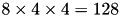 bins) is stacked as a single 128-dimensional vector, where the fastest varying dimension is the orientation and the slowest the y spatial coordinate. This is illustrated by the following figure.

- Note:
- Keypoints (frames) D. Lowe's SIFT implementation convention is slightly different: The y axis points upwards and the angles are measured counter-clockwise.

| Parameter | See also | Controlled by | Comment |
| magnification factor | SIFT Descriptor | vl_sift_set_magnif | increase this value to enlarge the image region described |
| Gaussian window size | SIFT Descriptor | vl_sift_set_window_size | smaller values let the center of the descriptor count more |
Extensions
Eliminating low-contrast descriptors. Near-uniform patches do not yield stable keypoints or descriptors. vl_sift_set_norm_thresh() can be used to set a threshold on the average norm of the local gradient to zero-out descriptors that correspond to very low contrast regions. By default, the threshold is equal to zero, which means that no descriptor is zeroed. Normally this option is useful only with custom keypoints, as detected keypoints are implicitly selected at high contrast image regions.
Using the SIFT filter object
The code provided in this module can be used in different ways. You can instantiate and use a SIFT filter to extract both SIFT keypoints and descriptors from one or multiple images. Alternatively, you can use one of the low level functions to run only a part of the SIFT algorithm (for instance, to compute the SIFT descriptors of custom keypoints).
To use a SIFT filter object:
- Initialize a SIFT filter object with vl_sift_new(). The filter can be reused for multiple images of the same size (e.g. for an entire video sequence).
- For each octave in the scale space:
- Compute the next octave of the DOG scale space using either vl_sift_process_first_octave() or vl_sift_process_next_octave() (stop processing if VL_ERR_EOF is returned).
- Run the SIFT detector with vl_sift_detect() to get the keypoints.
- For each keypoint:
- Use vl_sift_calc_keypoint_orientations() to get the keypoint orientation(s).
- For each orientation:
- Use vl_sift_calc_keypoint_descriptor() to get the keypoint descriptor.
- Delete the SIFT filter by vl_sift_delete().
To compute SIFT descriptors of custom keypoints, use vl_sift_calc_raw_descriptor().
Technical details
Scale space
In order to search for image blobs at multiple scale, the SIFT detector construct a scale space, defined as follows. Let 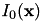 denote an idealized infinite resolution image. Consider the Gaussian kernel
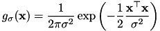
The Gaussian scale space is the collection of smoothed images
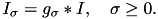
The image at infinite resolution 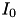 is useful conceptually, but is not available to us; instead, the input image 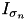 is assumed to be pre-smoothed at a nominal level 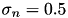 to account for the finite resolution of the pixels. Thus in practice the scale space is computed by
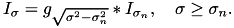
Scales are sampled at logarithmic steps given by
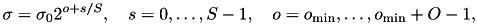
where 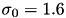 is the base scale, 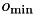 is the first octave index, O the number of octaves and S the number of scales per octave.
Blobs are detected as local extrema of the Difference of Gaussians (DoG) scale space, obtained by subtracting successive scales of the Gaussian scale space:
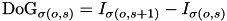
At each next octave, the resolution of the images is halved to save computations. The images composing the Gaussian and DoG scale space can then be arranged as in the following figure:

The black vertical segments represent images of the Gaussian Scale Space (GSS), arranged by increasing scale  . Notice that the scale level index s varies in a slightly redundant set
. Notice that the scale level index s varies in a slightly redundant set
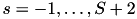
This simplifies glueing together different octaves and extracting DoG maxima (required by the SIFT detector).
Detector
The SIFT frames (keypoints) are extracted based on local extrema (peaks) of the DoG scale space. Numerically, local extrema are elements whose neighbors (in space and scale) have all smaller (or larger) value. Once extracted, local extrema are quadratically interpolated (this is very important especially at the lower resolution scales in order to have accurate keypoint localization at the full resolution). Finally, they are filtered to eliminate low-contrast responses or responses close to edges and the orientation(s) are assigned, as explained next.
Eliminating low contrast responses
Peaks which are too short may have been generated by noise and are discarded. This is done by comparing the absolute value of the DoG scale space at the peak with the peak threshold 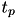 and discarding the peak its value is below the threshold.
Eliminating edge responses
Peaks which are too flat are often generated by edges and do not yield stable features. These peaks are detected and removed as follows. Given a peak 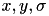, the algorithm evaluates the x,y Hessian of of the DoG scale space at the scale . Then the following score (similar to the Harris function) is computed:
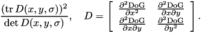
This score has a minimum (equal to 4) when both eigenvalues of the Jacobian are equal (curved peak) and increases as one of the eigenvalues grows and the other stays small. Peaks are retained if the score is below the quantity 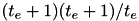, where 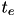 is the edge threshold. Notice that this quantity has a minimum equal to 4 when 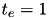 and grows thereafter. Therefore the range of the edge threshold is 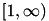.
Orientation assignment
A peak in the DoG scale space fixes 2 parameters of the keypoint: the position and scale. It remains to choose an orientation. In order to do this, SIFT computes an histogram of the gradient orientations in a Gaussian window with a standard deviation which is 1.5 times bigger than the scale of the keypoint.
This histogram is then smoothed and the maximum is selected. In addition to the biggest mode, up to other three modes whose amplitude is within the 80% of the biggest mode are retained and returned as additional orientations.
Descriptor
A SIFT descriptor of a local region (keypoint) is a 3-D spatial histogram of the image gradients. The gradient at each pixel is regarded as a sample of a three-dimensional elementary feature vector, formed by the pixel location and the gradient orientation. Samples are weighed by the gradient norm and accumulated in a 3-D histogram h, which (up to normalization and clamping) forms the SIFT descriptor of the region. An additional Gaussian weighting function is applied to give less importance to gradients farther away from the keypoint center.
Construction in the canonical frame
Denote the gradient vector field computed at the scale  by
by
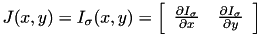
The descriptor is a 3-D spatial histogram capturing the distribution of 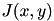. It is convenient to describe its construction in the canonical frame. In this frame, the image and descriptor axes coincide and each spatial bin has side 1. The histogram has 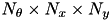 bins (usually 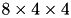), as in the following figure:
Bins are indexed by a triplet of indexes t, i, j and their centers are given by
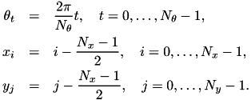
The histogram is computed by using trilinear interpolation, i.e. by weighing contributions by the binning functions
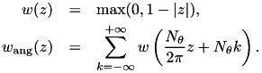
The gradient vector field is transformed in a three-dimensional density map of weighed contributions
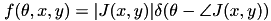
The historam is localized in the keypoint support by a Gaussian window of standard deviation  . The histogram is then given by
. The histogram is then given by
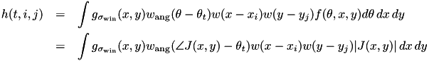
In post processing, the histogram is 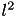 normalized, then clamped at 0.2, and normalized again.
Calculation in the image frame
Invariance to similarity transformation is attained by attaching descriptors to SIFT keypoints (or other similarity-covariant frames). Then projecting the image in the canonical descriptor frames has the effect of undoing the image deformation.
In practice, however, it is convenient to compute the descriptor directly in the image frame. To do this, denote with a hat quantities relative to the canonical frame and without a hat quantities relative to the image frame (so for instance 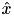 is the x-coordinate in the canonical frame and 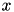 the x-coordinate in the image frame). Assume that canonical and image frame are related by an affinity:
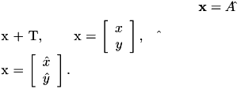
Then all quantities can be computed in the image frame directly. For instance, the image at infinite resolution in the two frames are related by
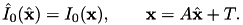
The canonized image at scale 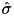 is in relation with the scaled image
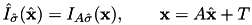
where, by generalizing the previous definitions, we have
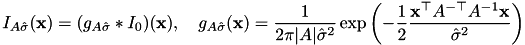
Deriving shows that the gradient fields are in relation
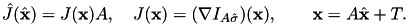
Therefore we can compute the descriptor either in the image or canonical frame as:
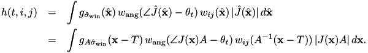
where we defined the product of the two spatial binning functions
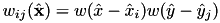
In the actual implementation, this integral is computed by visiting a rectangular area of the image that fully contains the keypoint grid (along with half a bin border to fully include the bin windowing function). Since the descriptor can be rotated, this area is a rectangle of sides 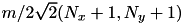 (see also the illustration).
Standard SIFT descriptor
For a SIFT-detected keypoint of center 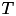, scale and orientation 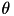, the affine transformation 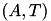 reduces to the similarity transformation
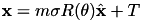
where 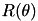 is a counter-clockwise rotation of radians, 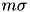 is the size of a descriptor bin in pixels, and m is the descriptor magnification factor which expresses how much larger a descriptor bin is compared to the scale of the keypoint (the default value is m = 3). Moreover, the standard SIFT descriptor computes the image gradient at the scale of the keypoints, which in the canonical frame is equivalent to a smoothing of . Finally, the default Gaussian window size is set to have standard deviation . This yields the formula